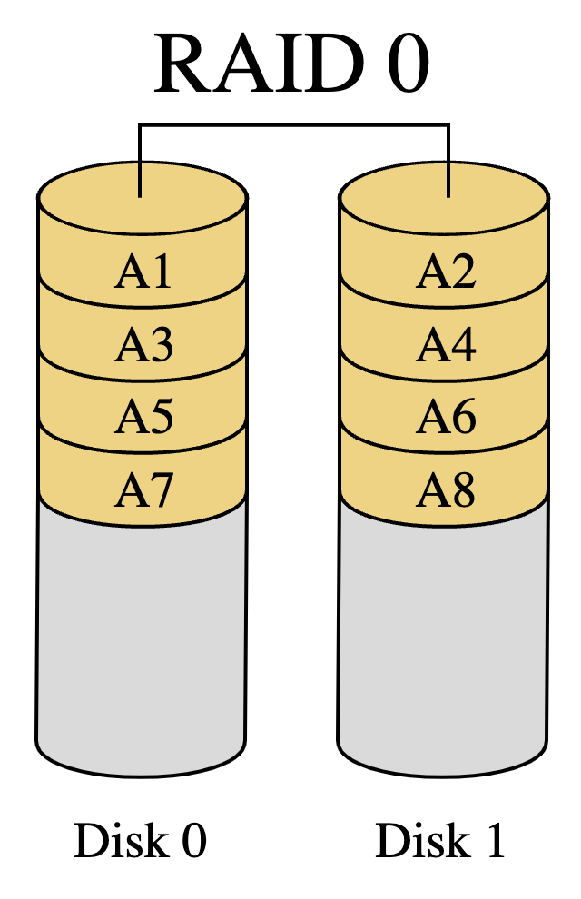
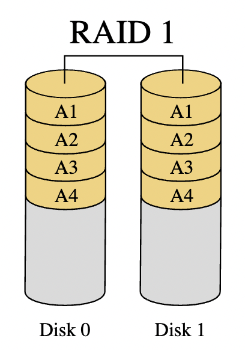
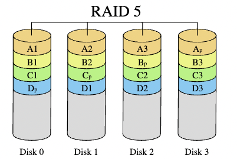
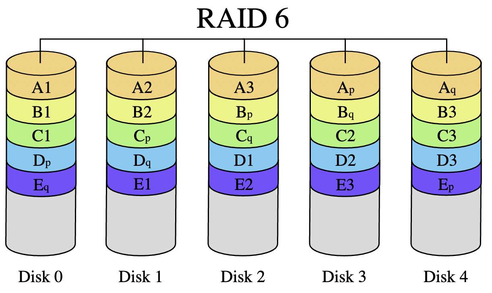

lesson link
Data must be stored on a physical device with non-volatile memory, i.e. memory that does not require constant power supply.
Storage devices
- in-computer memory, eg. RAM, cache, is volatile – contents will be lost if power supply is lost.
- non-volatile storage includes mechanical hard disk drives, solid-state devices (eg. flash drives), CD-ROM, DVD, tape.
- most common for databases, file systems are mechanical and solid state devices
Mechanical disk drives
video link
Data is stored on a disk magnetically as 1 or 0, aka magnetic bits facing north or south.
Transducers:
- data is read and written via transducers – devices converting one type of energy to another
- the transducer head has separate elements to read and write data
- the head is attached to an arm which moves along strokes (rings around disk) to read/write data
- when powered off, the head swings off the disk to rest to the side
- the arm moves very precisely to a given address
Solid-State Disk Drives
SSDs are slightly more expensive and have smaller capacities, BUT are far more reliable and extremely fast. (good example - smartphone drives)
- SSDs have a limited number of “write cycles” – therefore they aren’t good for high-volume transactional databases
Structure:
- Charge trap flash memory cell (CTF)
- store difference levels of electrons inside a charge trap
- old technology could only do 2 levels - lots of electrons or very few (1/0)
- can hold 8/16 levels of electrons, meaning that each CTF can store 3 or 4 bits long term (decades)
- SLC (0 or 1), vs. MLC (multi-bytes)
- Vnand (vertical nand) – stack of memory cells, eg. string
- control gates attached to string ensure that one CTF within a string is read at a time
- information relayed to bitline at the top
- strings are arranged into 2d pages, of which each row shares a control gate
- pages arranged into 3d blocks, so that bitlines are connected
- bitline selectors at top ensure that only one row can use bitline at a time
Comparing to Mechanical drives
Advantages:
- no moving components means that SSDs are silent, use less power, and are much less fragile
- SSDs can also read data much faster because they’re not reliant on the speed of the arm
Disadvantages:
- high storage cost per gigabyte
- lower drive capacities
- relatively low write speed
- wear leveling – reduces performance over time and causes encryption issues ## RAID: Redundant Array of Independent Devices
Commonly used method to prevent loss of data, such that the storage system continues to function even when a disk or disk data is lost. * provide protection against/recovery from hardware failures and defective drive hardware * no protection against data loss from environmental failures, eg. fire or flooding * data centers must guard against such events through distributed storage across physical locations
RAIDs require at least two storage devices – data is copied, mirrored, or striped across devices in the array. There are different RAID configurations distinguished by how they write data across the array. RAID 0 (striping), 1 (mirroring), 5 (distributed parity), and 10 (1 and 0) are most common.
- RAID 0: data is striped across devices without parity which improves performance but does not add any fault tolerance
- RAID 1: data is mirrored onto devices to improve fault tolerance and performance
- RAID 2: data is striped across devices at the bit level with a parity code written to a separate device; improving fault-tolerance; rarely used in practice
- RAID 3: data is striped across devices at the byte level with a parity code written to a separate device improving fault-tolerance; rarely used in practice
- RAID 4: data is striped across devices at the block level with a parity code written to a separate device improving fault-tolerance and performance
- RAID 5: data is striped along with error correcting parity codes across the devices improving fault-tolerance and performance
- RAID 6: same as RAID 5 but with two parity codes allowing for increased fault tolerance but lower performance than RAID 5
- RAID 10: a combination of RAID 0 and 1
RAID 0
- data is striped evenly across devices without any parity (error correcting) information.
- marginally improves read/write performance, but has no fault tolerance – if a device fails, entire array is compromised
- can be used build single large storage device from multiple devices
- array can be made from devices with differing capacities – actual capacity limited to smallest device capacity * number of devices
- array of n storage devices provides read/write rates up to n times higher than individual access rates
- Use cases: environments with high performance needs that can tolerate lower reliability, e.g. scientific computing.
- not appropriate for databases

RAID 1
- data is exactly mirrored onto 2+ storage devices
- devices split into two equal size groups
- fault tolerance holds so long as only one of the original and mirror are damaged
- allows for parallel retrieval, increasing performance
- write performance degraded as data is written twice – but if done in parallel, no worse than single performance
- Use case: useful when read performance more important than write performance

RAID 5
- strips data across storage devices in blocks and includes parity (error correcting) information across devices
- can sustain at most one device failure
- in case of failure, info on failed device reconstructed from remaining data and parity data
- reconstruction is computationally intensive, resulting in slow performance
- requires >= 3 disks
- offers read performance due to parallel processing; write performance degraded as parity information calculated

RAID 6
- Extends RAID 5 by adding another parity block, allowing for two device failures
- slower write performance and less capacity than RAID 5, but is more fault tolerant
- same read performance as RAID 5
- requires >= 4 disks

Choosing a RAID configuration
- choice of a RAID configuration depends on use case of system and desired degree of fault tolerance
- RAID 1 best for cases when fault tolerance is needed and cost is not a factor
- RAID 0 best to optimize read performance and cost, ignoring fault tolerance
- RAID 10 best for a higher-cost system with benefits of RAID 1 and RAID 0
- best for transactional system that must be highly available
- RAID 5 and 6 strike balance between cost, fault tolerance, and increased performance at cost of write performance
- good choice for data warehouses
RAID Controllers
RAID systems must be controlled by software or hardware.
- either done within operating system (software) or dedicated hardware-based controllers
- hardware controller usually has its own embedded OS
- usually dedicated hardware-based controller is faster and more reliable